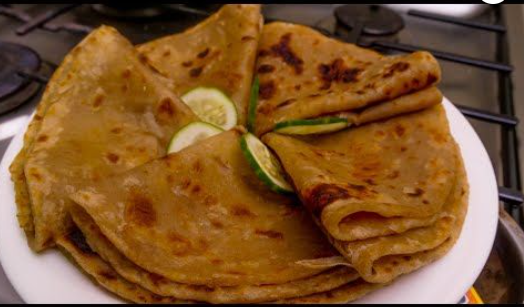

Kenyan soft chapati
Ingredients
3 Cups all purpose flour sieved(Not measuring cups)
2 Tablespoon Margarine(Optional)
1 Tablespoon Sugar(Optional)
1/2 Teaspoon salt
1 1/2 Cups warm water
Oil for cooking
Cooking instructions
1.In a bowl, mix flour, sugar and salt.
Add Margarine, mix with hands to form crumbs.
I use a little bit of sugar in mine because I
love the savoury taste. Omit it, if you don't like sugar.
2.Make a well and pour water bit by bit as
you knead. Knead for atleast 5 mins, if the dough is sticky,
add flour bit by bit as you knead.
3.Continue kneading on your work surface for another 3 mins.
(FOR SOFT CHAPATIS, YOU SHOULD KNEAD THOROUGHLY)
4.Finally dough should be firm but soft and not sticky.
Cover with a damp cloth/ cling film/plastic polythene bag for 30 minutes.
5.After 30mins, knead again and cut into balls.
6.Roll out the balls in a circular shape with a rolling pin, one at a time
and brush with oil.
7.Fold and Cover them to keep them soft.
8.Roll the balls out again forming the circle.(Layers should be
visible on the rolled out dough).
9.In a medium heat, place your skillet, let it warm up. Then put your chapati ontop.
Fry both sides until brown. Once cooked remove and place it in a containee and cover

Brown chapati
Ingredients
Brown wheat flour
White wheat flour
1 Tablespoon salt
2 table spoon sugar
Vegetable oil
Warm water
Cooking Instructions
1.Put one and a half cup of water in a basin
2.Add a table spoon of oil and salt to the water.(You
can add two table spoons of sugar)
3.Add mixture of white and brown wheat flour to the mixture
and start kneading the dough.
4.Cover the dough to relax for 20-30 minutes.
5.Split the dough into medium size balls.
6.Spread the dough and apply vegetable oil.
7.Roll the dough with applied oil and cut it into small equal sized pieces.
8.Place the pan on medium heat jiko/gas.Roll the the small sized balls into
circular shape and place it on the pan.
9.Heat the rolled dough both sides for 5 seconds.And repeat the same for other 5 pieces.
10.Apply cooking oil to ensure the chapati is well cooked
11.Serve with any stew of your choice.
